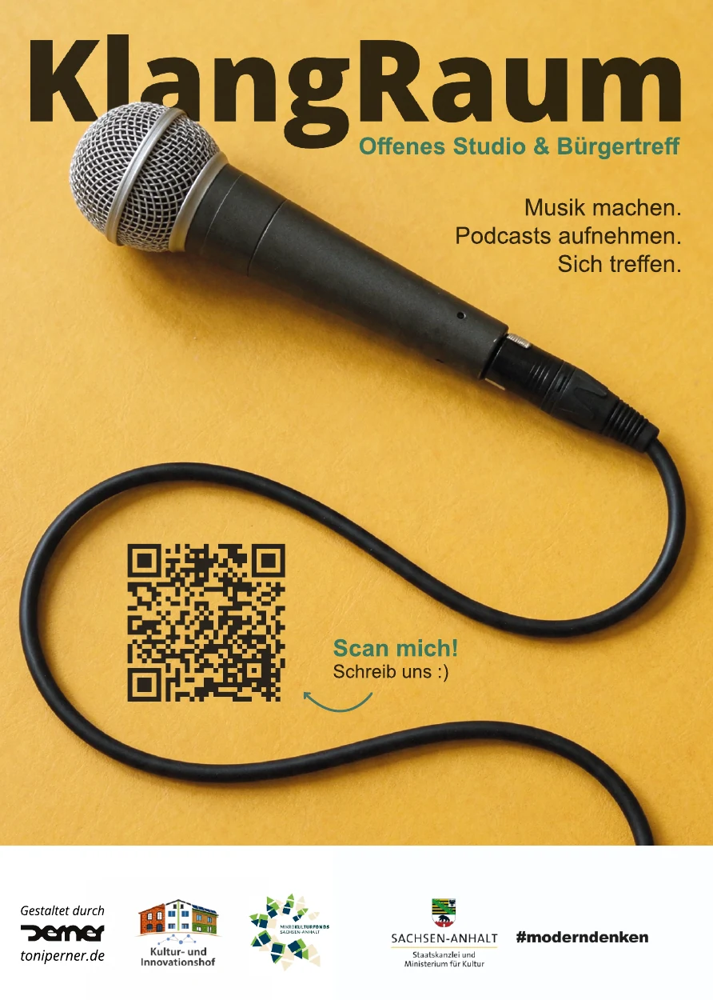
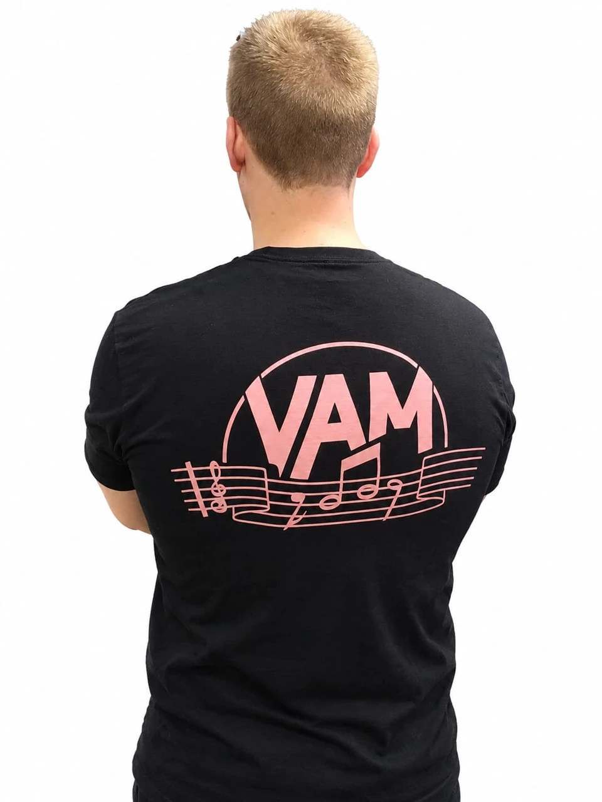

Proberaum
Für Bands, Solo-Musikerinnen und -Musiker und alle, die bei einer Session Neues ausprobieren wollen.
5 € erste Stunde · 3 € je weitere Stunde
Für Vereinsmitglieder kostenlos.
Verein Aktiver Musiker 2009 e. V. · Staßfurt
Wir schaffen Raum für Musik und Kultur im Salzlandkreis. Für alle, die proben, gemeinsam etwas auf die Beine stellen oder einfach mit anpacken wollen.
Ein Projekt des VAM 09
Im KuH geht es über Musik hinaus. Hier kannst du proben, Instrumente reparieren oder eigene Projekte umsetzen. Der Kultur- und Innovationshof entsteht als Ort, an dem Menschen aus der Region ihre Ideen gemeinschaftlich verwirklichen können.
„Räume machen Menschen, Menschen machen Räume.“
Für Bands, Solo-Musikerinnen und -Musiker und alle, die bei einer Session Neues ausprobieren wollen.
5 € erste Stunde · 3 € je weitere Stunde
Für Vereinsmitglieder kostenlos.

Repariere ein Instrument, baue ein Möbelstück oder bring dein nächstes Upcycling-Projekt mit.
5 € erste Stunde · 3 € je weitere Stunde
Für Vereinsmitglieder kostenlos.
Offenes Studio & Bürgertreff
Im KlangRaum kannst du Musik machen, Podcasts aufnehmen oder dich mit anderen treffen.

Vereinsheim · Schlachthofstraße 10
Seit 2010 ist das Vereinsheim in Staßfurt unser Treffpunkt für Proben, Aufnahmen und den Austausch in der lokalen Musikszene.
Sieben Räume mit je rund 20 m² stehen Mitgliedern rund um die Uhr zur Verfügung. Die Nutzungsgebühr beträgt 75 € zuzüglich aller Nebenkosten. Frag uns nach der aktuellen Verfügbarkeit und den Konditionen.
Verfügbarkeit erfragenVereinsmitglieder können nach Absprache eigene Musik aufnehmen und sich im Verein Unterstützung holen. Das Studio steht auf Anfrage auch für euch zur Verfügung.
Studio anfragenBeim Stammtisch im Vereinsheim treffen sich Mitglieder und Interessierte. Getränke gibt es gegen einen kleinen Beitrag.
Zu den TerminenWir möchten lokalen Bands und Nachwuchsacts eine Bühne geben. Zu unseren bisherigen Formaten gehören die Rockwiese, das Salzlandfest und der Musikflohmarkt.
Ins VereinsarchivLED-Lichtset mit Stativ, aktive 12-Zoll-Box und weitere Technik auf Anfrage. Wir klären Preis und Verfügbarkeit mit dir vorab.
Technik anfragenSeit 2009 im Salzlandkreis
Der Verein Aktiver Musiker 2009 e. V. wurde am 3. April 2009 in Förderstedt gegründet. Wir fördern die lokale Musikszene über Genres und Generationen hinweg. Dazu bringen wir Musikschaffende, Nachwuchs, Schulen und andere Kulturakteure zusammen.
Steve Peterka · 1. Vorsitzender
Chris Brennecke · 2. Vorsitzender
Kevin Christoph · Kassenwart
Termine und Rückblicke
Frag uns nach dem nächsten Stammtisch oder einer Gelegenheit, im Vereinsheim vorbeizuschauen.
Tag der offenen Tür mit Live-Musik, Flohmarkt und Instrumenten zum Ausprobieren.
Musikflohmarkt mit Vereinsmusikern und LAD PETE aus Erfurt.
Ein Abend im Vereinsheim für Mitglieder, Freundinnen, Freunde und Interessierte.
Mitglied werden
Du spielst Musik oder hast Lust, im Salzlandkreis etwas zu bewegen? Komm zum Stammtisch oder melde dich bei uns. Du kannst aktiv mitwirken oder den Verein als Fördermitglied unterstützen.

VAM 09 · Staßfurt
Mitgliedsbeiträge und Projekte tragen unsere Arbeit. Geld- und Sachspenden helfen uns, unsere Angebote weiterzuentwickeln. Spenden an unseren gemeinnützigen Verein können steuerlich geltend gemacht werden. Fragen zu Spenden und Zuwendungsbestätigungen beantworten wir per E-Mail.
Spende besprechen